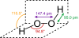

peroxide

Definition: In chemistry, peroxides are a group of compounds with the structure R−O−O−R, where R is any element. The O−O group in a peroxide is called the peroxide group or peroxy group (sometimes called peroxo group or peroxyl group). The nomenclature is somewhat variable, and the term was introduced by Thomas Thomson in 1804 for an oxide with the greatest quantity of oxygen.The most common peroxide is hydrogen peroxide (H2O2), colloquially known simply as "peroxide". It is marketed as solutions in water at various concentrations. Many organic peroxides are known as well.
Source: Wikipedia
Wikipedia Page
Wikidata Page